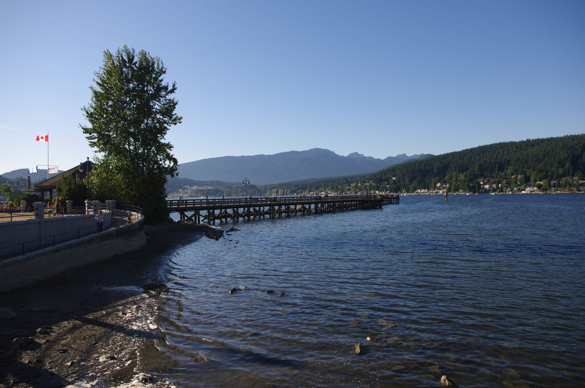
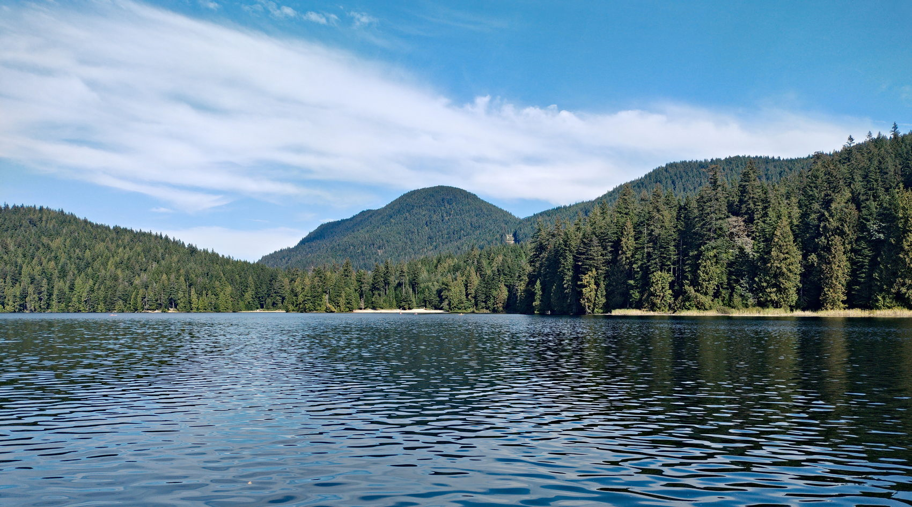
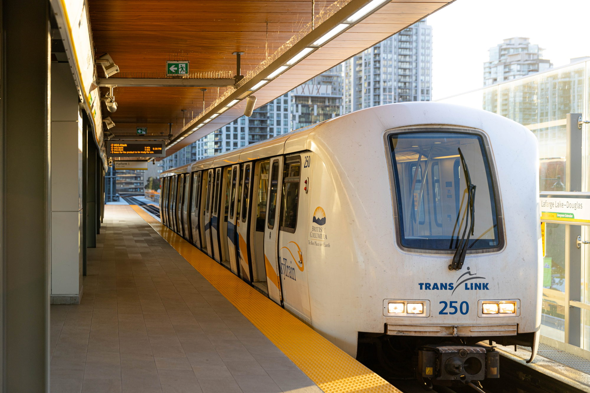
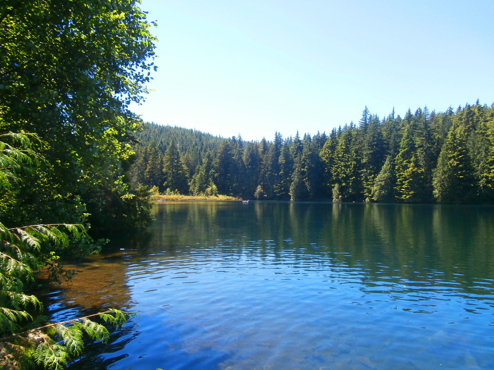
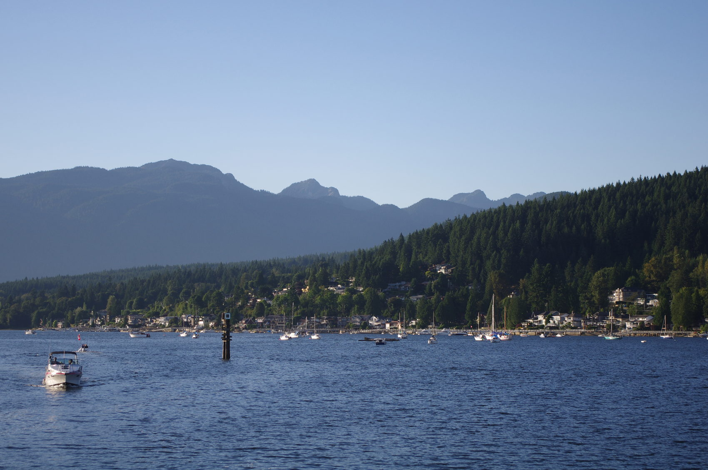
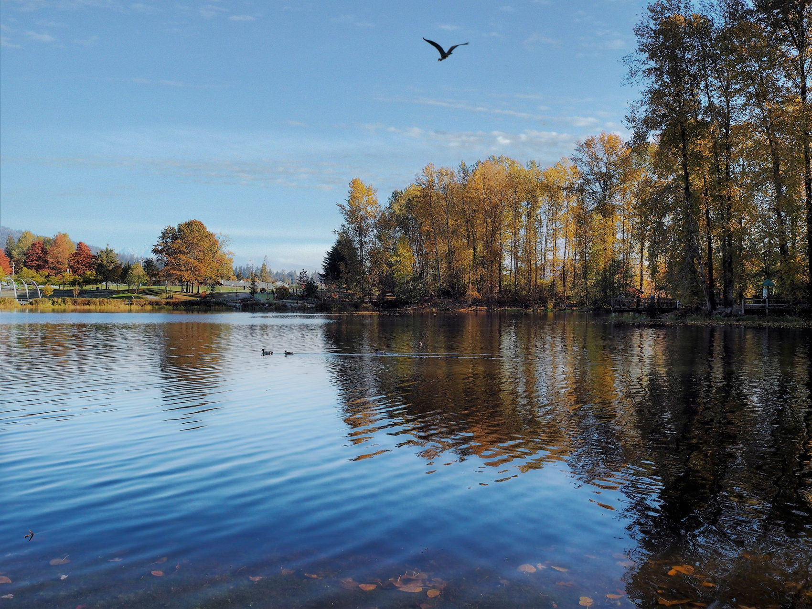
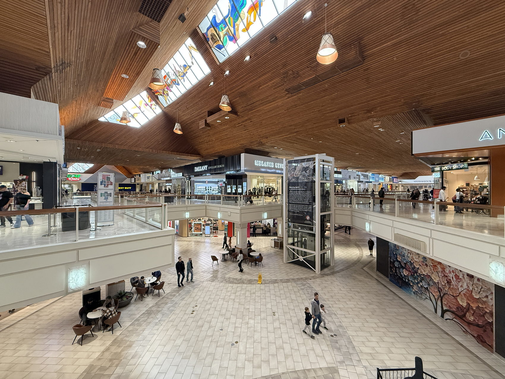
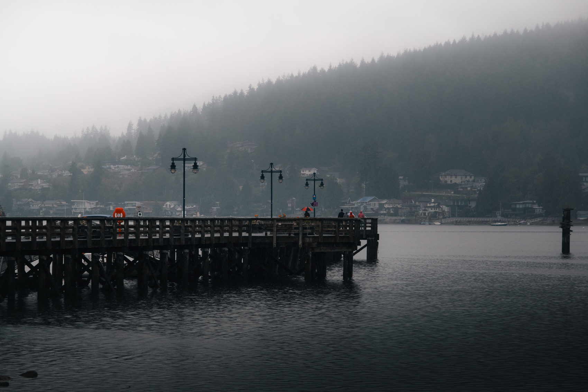
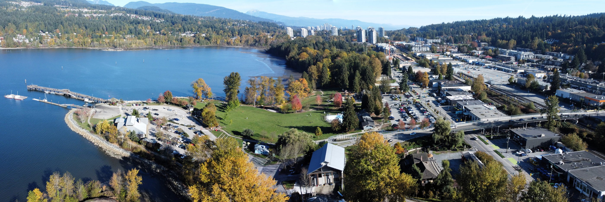
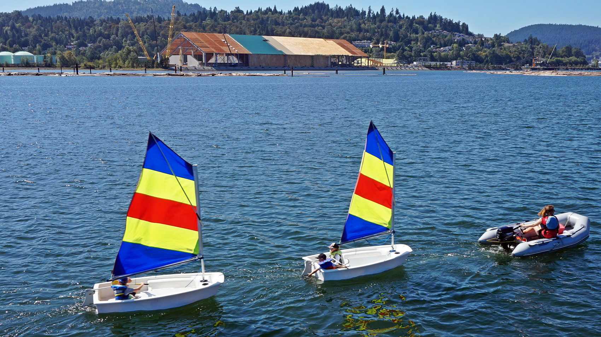

Draft for review. This page is marked noindex and is not linked as a public article until Devin approves it.
Buntzen Lake, Anmore. Ben Waardenburg, CC0, via Wikimedia Commons
Relocation guide · October 2026 Axford Real Estate · Port Moody
Moving to the Tri-Cities
Coquitlam, Port Coquitlam, Port Moody, Anmore and Belcarra — the six Evergreen stations, asking rents, benchmark prices, parks, SD43, the Buntzen pass and the first 30 days, with every figure dated and every source named.
Devin DesaulniersReal Estate Associate, Axford Real Estate · office on Clarke Street, Port Moody
Figures checked 11 October 2026 · they change
Where I live and work
Three cities, two villages
I’m Devin Desaulniers, a Real Estate Associate with Axford Real Estate at 2326 Clarke Street in Port Moody. I’ve lived in Greater Vancouver for 28 years and I play soccer on a Port Coquitlam team. The Tri-Cities are the part of the region I can describe from a weekday, not from a listing.
“Tri-Cities” means three cities: Coquitlam, Port Coquitlam (PoCo) and Port Moody. Anmore and Belcarra are villages immediately north of Port Moody. People fold them into the same house search. They are not the same kind of place: the villages are larger lots, forest, and a car for most trips.
Two rent statistics get mixed up. Asking rents are vacant listings (Rentals.ca, September 2026, published 7 October 2026). CMHC averages include homes people already occupy (October 2025 survey). If you are arriving now, budget the asking rent.
These figures move. Asking rents are Rentals.ca’s September 2026 report (published 7 October 2026). Benchmarks are Greater Vancouver REALTORS® for September 2026 (published 2 October 2026). CMHC bedroom averages are the October 2025 survey. Tax and tenancy rules were checked on 11 October 2026. Confirm anything you are about to sign or pay.
The wider region — Vancouver, Burnaby, New Westminster, Richmond, the North Shore, Surrey — is in the Greater Vancouver guide. This one stays local, and it still includes the tenancy rules, MSP, and the first 30 days, because those follow you no matter which city you pick.
October 2026, in four numbers
The Tri-Cities at a glance
$2,497
Asking rent, Coquitlam apartments and condos — the one Tri-Cities line published for September 2026 (Rentals.ca).
$1,909
CMHC average, Coquitlam, all sizes, October 2025. Sitting tenants included.
6
Evergreen stations, all in Coquitlam and Port Moody. Same train as the Millennium Line.
½ month
Legal maximum security deposit. Application fees are illegal.
Composite benchmark price, September 2026, MLS® HPI
Greater Vancouverfor scale
$1,075,900−5.5% year over year
Port Moody
$1,011,500−5.8% year over year
Coquitlam
$971,700−6.3% year over year
Port Coquitlam
$835,500−8.2% year over year
Three cities, two villages. Each city has its own hall, its own garbage calendar and its own benchmark row. Anmore and Belcarra have no SkyTrain and no GVR benchmark, and I will not invent one.
A benchmark is a typical home, not a price tag on any listing. Read the apartment column for a condo near a station and the detached column for a house on the hill. Do not average the two in your head and go shopping.
An island off Belcarra, at the mouth of the inlet.Photo: Adam Brown / Pexels
Where to live
Five places, not one
The five communities show up in the same search; they are not the same errand pattern. The number that matters is your station plus the rent or price on a specific home. Composite benchmarks are Greater Vancouver REALTORS® figures for September 2026.
Lights at Lafarge, Town Centre Park. GoToVan, CC BY 2.0, via Wikimedia Commons
Coquitlam
The largest of the three
Coquitlam runs from older neighbourhoods near the Fraser up to Burke Mountain and Westwood Plateau. City Centre — Coquitlam Centre, Lafarge Lake and Town Centre Park — is the hub the SkyTrain was built toward, and four of the six Evergreen stations are in Coquitlam. September 2026 composite benchmark: $971,700, down 6.3% from a year earlier.
Names you will see on listings: Burke Mountain, Westwood Plateau, City Centre, Burquitlam, Austin Heights, Maillardville, Ranch Park, Eagle Ridge. Burquitlam is the SkyTrain stop on Clarke Road. Maillardville is the older francophone neighbourhood in the southwest. Burke Mountain and Westwood Plateau are the hillside choice: more house, more of a drive, trails at the door. City Centre is the “I want the train and the mall” choice. The commute is usually what decides it.
Millennium Line: Burquitlam, Coquitlam Central, Lincoln and Lafarge Lake–Douglas. West Coast Express at Coquitlam Central. R3 RapidBus toward Port Coquitlam and Maple Ridge.
Pitt River Bridge, at PoCo’s eastern edge. Photo: James Wheeler / Pexels
Port Coquitlam
PoCo
Between the Coquitlam and Pitt rivers. A walkable downtown, the Traboulay PoCo Trail looping the city, and Terry Fox’s hometown. It is also where I play soccer, so it is part of my week. September 2026 composite benchmark: $835,500, down 8.2%, the lowest of the three cities.
Names on listings: Downtown PoCo, Citadel Heights, Mary Hill, Oxford Heights, Lincoln Park, Riverwood, Birchland Manor, Glenwood. There is no SkyTrain station. The West Coast Express stops at Port Coquitlam station on Kingsway, weekday rush hour only, and the R3 RapidBus runs along Lougheed Highway toward Coquitlam Central and toward Maple Ridge. If your job is downtown at 9 a.m., the train can work. If your hours move around, budget a bus plus SkyTrain, or a car.
No SkyTrain. West Coast Express at Port Coquitlam station, weekday rush hours. R3 Lougheed Hwy RapidBus and the 160 bus.

The pier at Rocky Point Park. Eviatar Bach, CC BY-SA 3.0, via Wikimedia Commons
Port Moody
Head of the inlet
Port Moody calls itself the City of the Arts. It sits at the head of Burrard Inlet: a waterfront, then forested hills. Rocky Point Park, the Shoreline Trail, and the breweries along Murray Street — Brewers Row — are local favourites. Axford Real Estate’s office is on Clarke Street, which is this downtown. September 2026 composite benchmark: $1,011,500, down 5.8%. The detached number is a different market from the apartments at Inlet Centre.
Names on listings: Moody Centre, Inlet Centre and Suter Brook, Newport Village, Heritage Mountain, Heritage Woods, College Park, Glenayre, Ioco. Moody Centre and Inlet Centre have SkyTrain. Heritage Mountain, Heritage Woods and Ioco are up the hill. Ioco feels further from the stations than the map suggests once you are driving the switchbacks.
Millennium Line: Moody Centre and Inlet Centre. West Coast Express at Moody Centre. The 182 bus to Anmore and Belcarra starts here.

Sasamat Lake, Belcarra Regional Park. The Cosmonaut, CC BY-SA 2.5 CA, via Wikimedia Commons
Anmore and Belcarra
The villages
Two small municipalities in the forest north of Port Moody. Homes tend to sit on larger, treed lots. Residents trade convenience for that. Buntzen Lake is in Anmore. təmtəmíxʷtən/Belcarra Regional Park and Sasamat Lake are the reason people from the rest of the region drive up on a hot day. GVR does not publish a separate benchmark for Anmore or Belcarra. The nearest SkyTrain and West Coast Express are in Port Moody. Bus 182 runs from Moody Centre Station to Belcarra and stops at Anmore Grocery.
I don’t treat these villages as a quiet corner of Port Moody. They are a different errand pattern. Map the grocery trip and the school run before you fall for a lot. Lot size can also affect the property transfer tax exemption, which is generally limited to 0.5 hectares for the full amount.
No GVR benchmark row0 SkyTrain stations182 bus, Moody Centre to Belcarra via Anmore Grocery0.5 ha lot limit for the full first-time PTT exemption
No SkyTrain or West Coast Express. The 182 from Moody Centre Station is the bus.
What listings ask · Rentals.ca and Urbanation · September 2026 listings, published 7 October 2026
Asking rents
Rentals.ca’s October 2026 report publishes one Tri-Cities figure: an apartment-and-condo asking average for Coquitlam. It does not publish a Port Moody or Port Coquitlam figure, or a bedroom split for Coquitlam. These are vacant listings, not the rent a neighbour who moved in three years ago is paying.
Coquitlam · apts & condos
$2,497
The one Tri-Cities figure in the September report. No bedroom split; no Port Moody or Port Coquitlam line.
Burnaby · apts & condos
$2,548
Next door on the Millennium Line. Year-over-year change not published in the text used.
Vancouver · apts & condos
$2,741
+1.4% from August, −1.3% year over year. Lowest September since 2021, and the 34th straight month of annual decline.
Richmond · apts & condos
$2,572
−8.4% year over year.
Apartments and condos by city, September 2026 average asking rent
North Vancouver
$2,983“essentially unchanged” year over year
Vancouver
$2,741−1.3% year over year
Richmond
$2,572−8.4% year over year
Burnaby
$2,548year-over-year change not published
Coquitlam
$2,497year-over-year change not published
B.C. average
$2,373−2.3% year over year
Canadaall property types
$2,034−4.2% year over year
Not published
Port Moody, Port Coquitlam, Anmore and Belcarra did not get their own line in the September report, and the report did not publish bedroom-level asking rents for cities other than Vancouver. Budget there from live listings in the week you search. I am not filling the gap with a guess.
B.C. · apts & condos
$2,373
+0.8% from August, −2.3% year over year, −10.7% over three years.
Canada · all property types
$2,034
−4.2% year over year, the 24th straight month of annual decline. 9.2% below the May 2024 peak of $2,202.
Start from Coquitlam’s $2,497, then throw it out as soon as you have three real listings in the neighbourhood you want. A new tower at Inlet Centre and an older walk-up in Maillardville are not the same product; the average sits between them. Basement suites and rented condos are a large part of the local supply, and CMHC’s purpose-built table below does not describe them.
CMHC average rents, October 2025 — sitting tenants included
CMHC’s Rental Market Survey, October 2025, published in the data tables on 11 December 2025, is the bedroom-by-city set. It covers privately initiated purpose-built rental apartments in buildings with at least three units, occupied and vacant, with occupied units counted at the rent the tenant pays. That is why these numbers sit below asking rents. Letters are CMHC’s reliability codes: a excellent, b very good, c good, d poor — use with caution. Unmarked figures are code a. A dash means CMHC suppressed the cell.
1 bedroom2 bedroomRight-hand figure: all bedroom types
Coquitlam
$1,692 1 bed · b
$2,148 2 bed · b
$1,909all types · b
Port Coquitlam
$1,634 1 bed · b
$2,095 2 bed · c
$1,918all types · b
Port Moody
— 1 bed suppressed
— 2 bed suppressed
$2,284all types · d
Burnaby
$1,730 1 bed
$2,147 2 bed · b
$1,856all types · a
New Westminster
$1,645 1 bed
$2,134 2 bed
$1,794all types · a
Vancouver, City
$1,860 1 bed
$2,638 2 bed
$1,994all types · a
Vancouver CMAthe whole region
$1,807 1 bed
$2,364 2 bed
$1,970all types · a
Why this is lower
Purpose-built rentals of three or more units, occupied and vacant. A tenant who signed in 2019 is in this average. A listing this month is not. Basement suites and rented condos are outside it.
Port Moody
$2,284code d
Port Moody’s row is reliability code d: too weak to budget a move from. Its 3-bedroom-plus average is $1,905, also code d. Studios, 1- and 2-bedroom cells were suppressed.
Studios and 3+ bedrooms
Coquitlam studio $1,637 (b), 3+ bedroom $2,737 (b). Port Coquitlam: both suppressed. Vancouver CMA studio $1,667, 3+ bedroom $2,820.
$1,909
CMHC average, Coquitlam, all sizes, October 2025.
$2,497
Asking average, Coquitlam apartments and condos, September 2026.
+31%
The gap. It is the reason newcomers under-budget.
Every bedroom type for the three cities, with the region for scale (CMHC table)
CMHC average rent by bedroom type, October 2025 survey. Purpose-built rentals only. Not September 2026 asking rents. A dash means CMHC suppressed the cell; letters are reliability codes. Port Moody’s cells are code d — use with caution.
City
Studio
1 bed
2 bed
3 bed+
All units
Coquitlam
$1,637 b
$1,692 b
$2,148 b
$2,737 b
$1,909 b
Port Coquitlam
—
$1,634 b
$2,095 c
—
$1,918 b
Port Moody
—
—
—
$1,905 d
$2,284 d
Vancouver CMA, for scale
$1,667 a
$1,807 a
$2,364 a
$2,820 a
$1,970 a
MLS® Home Price Index · September 2026 · one-year change beside each figure
Benchmark prices
Greater Vancouver REALTORS® published these figures on 2 October 2026. A benchmark is a typical home in that market, not an asking price on a street. Greater Vancouver is the regional composite, included so the three cities have a scale.
Coquitlam
$971,700−6.3%
$1,584,400Detached −6.6%
$976,600Townhouse −6.5%
$640,100Apartment −7.3%
Port Coquitlam
$835,500−8.2%
$1,240,600Detached −8.5%
$834,300Townhouse −7.8%
$550,000Apartment −9.0%
Port Moody
$1,011,500−5.8%
$1,903,500Detached −8.4%
$940,900Townhouse −5.2%
$676,200Apartment −4.9%
Greater Vancouver · for scale
$1,075,900−5.5%
$1,784,700Detached −7.3%
$1,016,700Townhouse −4.7%
$682,500Apartment −6.2%
Detached
Port Moody$1,903,500
Greater Vancouver$1,784,700
Coquitlam$1,584,400
Port Coquitlam$1,240,600
Townhouse
Greater Vancouver$1,016,700
Coquitlam$976,600
Port Moody$940,900
Port Coquitlam$834,300
Apartment
Greater Vancouver$682,500
Port Moody$676,200
Coquitlam$640,100
Port Coquitlam$550,000
Read the apartment column if you are comparing a condo near a station, and the detached column if you are comparing a house on Burke Mountain or in Port Moody’s hills. Port Moody’s detached benchmark ($1,903,500) is closer to Vancouver West’s world than to PoCo’s detached benchmark ($1,240,600). More on the regional split is in the Greater Vancouver guide.
September 2026 sales, Greater Vancouver REALTORS®, region-wide
1,717
Sales in September, 8.4% fewer than the 1,875 in September 2025
777
Apartments sold, down 18.6% — the weak segment
575
Detached sold, up 4.2%
358
Attached sold, up 0.6%
10.9%
Sales-to-active-listings ratio, with 16,394 active listings
Region-wide, September’s 1,717 sales were 25% below the 10-year average for the month (2,289), and the weakness was concentrated in apartments. Active listings were 16,394, still 24.3% above the 10-year September average. GVR says prices have tended to face downward pressure when the sales-to-active-listings ratio stays under 12% for a sustained period.
TransLink · a diagram I drew, not a TransLink map
Evergreen is the Millennium Line
The useful correction for newcomers: the Evergreen Extension is not a separate line you transfer onto. After Lougheed Town Centre the Millennium Line keeps going as the Evergreen Extension — six stations in Coquitlam and Port Moody, same train, no transfer. Port Coquitlam has the West Coast Express, not SkyTrain. The diagram is a straight-line schematic in TransLink’s station order. It is not to scale.
Evergreen stations, in order: Burquitlam (Clarke Road, between Smith and Como Lake, Coquitlam) → Moody Centre (between Moody and Williams streets, Port Moody; also West Coast Express) → Inlet Centre (Ioco Road and Barnet Highway, Port Moody) → Coquitlam Central (east of Johnson Street at the Mariner Way overpass; also West Coast Express) → Lincoln (Pinetree Way, by Coquitlam Centre) → Lafarge Lake–Douglas (Pinetree Way and Guildford Way, the terminus, beside Town Centre Park).
Six stations, in order
Station 1 · Coquitlam
Burquitlam
Clarke Road, Coquitlam. The first Evergreen stop after Lougheed Town Centre.
Station 2 · Port Moody
Moody Centre
Port Moody, and a West Coast Express station too. Clarke Street — and my office — is this end of town.
West Coast Express
Station 3 · Port Moody
Inlet Centre
Ioco Road and Barnet Highway. Suter Brook Village is near this station. Not the same walk as Moody Centre.
Station 4 · Coquitlam
Coquitlam Central
Also a West Coast Express station, and where the R3 Lougheed Hwy RapidBus starts toward Port Coquitlam and Haney Place.
West Coast Express
Station 5 · Coquitlam
Lincoln
Coquitlam Centre, the mall: about 930,000 square feet and nearly 200 stores.
The mall
Station 6 · Coquitlam
Lafarge Lake–Douglas
Pinetree and Guildford, beside Town Centre Park. Published in-vehicle time to Commercial–Broadway: 35 minutes.
End of the line
Lincoln is the mall. Lafarge Lake is the park. One stop apart, and people mix them up when they are giving directions to Coquitlam Centre. Inlet Centre and Moody Centre are both Port Moody and they are not the same walk: Suter Brook is at Inlet Centre, Clarke Street is at Moody Centre.

A Millennium Line train near Lafarge Lake–Douglas, the end of the line.1juszz, CC BY-SA 4.0, via Wikimedia CommonsMoody Centre: SkyTrain and West Coast Express.Northwest, CC BY-SA 4.0, via Wikimedia Commons
Fares and zones, October 2026
Three zones are still the system. TransLink has not replaced them with a distance fare. Every bus and HandyDART trip is 1-zone, all day. SkyTrain is 1, 2 or 3 zones on weekday daytimes, and 1-zone after 6:30 p.m. and all weekend and statutory holidays. A weekday daytime ride from these stations into downtown crosses zone boundaries: count the zones on TransLink’s map for your exact pair of stations before you buy a monthly pass. I am not labelling that trip “3-zone” here unless you have checked the zone map for the stations you will actually use.
1 zone · adult
$2.85
Cash, Compass ticket or tap$3.50
Monthly pass$117.20
2 zones · adult
$4.20
Cash, Compass ticket or tap$5.10
Monthly pass$156.70
3 zones · adult
$5.40
Cash, Compass ticket or tap$6.70
Monthly pass$211.65
The big figures are Compass stored value, the cheaper adult fare, as published by TransLink when this was checked. A Compass Card is a $6 refundable deposit. Children 12 and under ride free. A fare lasts 90 minutes on bus, SkyTrain, SeaBus and HandyDART, or 120 minutes if the West Coast Express is part of the trip.
Compass card, briefly
A $6 refundable deposit. Buy it at compasscard.ca, by phone at 604-398-2042, at a Compass vending machine in every SkyTrain, SeaBus and West Coast Express station, at the customer service centre in Waterfront Station, or at authorized retailers including some London Drugs stores. Load stored value in increments of at least $5. A monthly pass is worth comparing if you ride SkyTrain across zones every weekday; it includes unlimited bus travel and all-zone travel on evenings, weekends and holidays.
West Coast Express, the train that only runs at rush hour
Waterfront, Moody Centre, Coquitlam Central, Port Coquitlam, Pitt Meadows, Maple Meadows, Port Haney, Mission City. Weekdays only. Five trains westbound in the morning, five eastbound in the late afternoon and evening. Mission City’s departures are 5:25, 5:55, 6:25, 6:55 and 7:25 a.m., arriving Waterfront at 6:40, 7:10, 7:40, 8:10 and 8:40 a.m. — 75 minutes end to end. Eastbound, Waterfront departs 3:50, 4:20, 4:50, 5:30 and 6:20 p.m. Tri-Cities stations are closer; use the current timetable for those minutes rather than a number I would be guessing.
It has its own 1-to-5 zone prices. Moody Centre, Coquitlam Central and Port Coquitlam are 3 West Coast Express zones from Waterfront. A SkyTrain monthly pass does not replace a West Coast Express pass. A West Coast Express return fare or monthly pass does include bus, SkyTrain and SeaBus the same day. Station parking was listed at $3 a day or $60 a month.
Buses you will actually see
Local routes feed Coquitlam Central, Moody Centre and Port Coquitlam station. The R3 Lougheed Hwy RapidBus is the limited-stop service between Coquitlam Central and Haney Place in Maple Ridge, via Port Coquitlam. The 182 is how you reach Belcarra, and the stop at Anmore Grocery is the one BC Hydro mentions for Buntzen Lake. The 160 runs from Port Coquitlam Station through Coquitlam Central and Moody Centre to Kootenay Loop in Vancouver along Hastings. I am not quoting a minutes-between-buses figure for the 160.
To downtown, in published minutes
Getting to Waterfront
Millennium Line trains do not go to Waterfront. You transfer, most often at Commercial–Broadway, to the Expo Line. These are TransLink’s own in-vehicle minutes, added together; they exclude the wait for the second train.
Coquitlam CentralMillennium Line
32 min
Commercial–Broadwaychange to the Expo Line
10 min
Waterfrontdowntown
≈ 42minutes in-vehicle, plus the wait
Lafarge Lake–Douglasend of the Millennium Line
35 min
Commercial–Broadwaychange to the Expo Line
10 min
Waterfrontdowntown
≈ 45minutes in-vehicle, plus the wait
At peak, TransLink publishes Expo Line frequency of 2–5 minutes and Millennium Line frequency of 3–4 minutes, so a peak trip is often a few minutes longer than the sum. Burquitlam, Moody Centre, Inlet Centre and Lincoln sit on the same line, so their in-vehicle times fall between Lougheed Town Centre and these two figures. I am not inventing a minute for each station.
Lafarge Lake, beside the last station.Rajivkozhikode, CC BY-SA 4.0, via Wikimedia Commons
Why there is no driving table
Driving is the other option: Barnet Highway toward Hastings, Lougheed Highway, or Highway 1. I will not print a driving-minute table. Those roads are a different trip at 7:30 a.m. and at 10 a.m., and a printed “typical” number would be wrong for one of them. Tell me the address and the hour and I will look at that trip, not a regional average.
The reason people pick this side of the region
Lakes and the villages

Buntzen Lake in summer. Free parking, and a free pass you still need.Jennifer C., CC BY 2.0, via Wikimedia Commons
Anmore
Buntzen Lake — read this before a sunny Saturday
BC Hydro runs the recreation area in Anmore. Parking is free. In recent summers, roughly mid-May to early September, you still need a free online parking pass, released in the morning for the next day. Cars without one are turned away. Dates change; check bchydro.com/buntzen for the current year. Outside that window the lot can still fill and the gate can close. There is no public parking in the Village of Anmore. Walking, cycling and the 182 bus do not need a pass. The 182 stops at Anmore Grocery, about a 30-minute walk to the South Beach lot.
Belcarra
Belcarra and Admiralty Point
Metro Vancouver’s təmtəmíxʷtən/Belcarra Regional Park, at the mouth of the inlet: the beach, Sasamat Lake (White Pine Beach is the swim spot), Woodhaven Swamp, and the Admiralty Point Trail. The park brochure lists that trail at about 6 km and 1.5 hours, a hardened path with rocky shoreline and inlet views. The 182 from Moody Centre is the bus. On a hot weekend, locals go early or they don’t go.
May–Sept
Buntzen pass season in recent summers, roughly mid-May to early September. Free, next-day, released in the morning. Walkers, cyclists and the bus do not need one.
30 min
On foot from the Anmore Grocery bus stop to Buntzen’s South Beach.
6 km
Admiralty Point Trail, about 1.5 hours, rocky shoreline. Belcarra Regional Park.
Parks in the cities

The inlet from Rocky Point.Eviatar Bach, CC BY-SA 3.0, via Wikimedia Commons

Autumn in Coquitlam.Photo: Henry C Wong / PexelsMinnekhada Regional Park, Coquitlam.Jennifer C., CC BY 2.0, via Wikimedia Commons
Port Moody
Rocky Point Park
2800 Murray Street, Port Moody. The city’s waterfront park: pier, playground, Shoreline Trail along the inlet, kayak and paddleboard rental, and food at the park — Rocky Point Ice Cream was still open when this was checked in October 2026. A master plan endorsed by council in 2024 sets the next stretch of upgrades. Brewers Row is across the street on Murray. This is the after-work walk, not a hike.
Coquitlam
Mundy Park and Town Centre Park
Mundy Park, 641 Hillcrest Street: a 178-hectare urban forest, dedicated as an urban forest park in 1993, with Mundy Lake and Lost Lake. The 5.5 km multi-use loop around it is about an hour on foot. Town Centre Park, 1299 Pinetree Way: 42 hectares on Lafarge Lake, opened in 1989, with the Community Plaza on the lake (2016) next to Lafarge Lake–Douglas station, and the winter lights. If you live at that end of the line, this is the park at the bottom of the escalator.
Port Coquitlam
Traboulay PoCo Trail
PoCo’s equivalent of a long walk is the Traboulay PoCo Trail looping the city, plus the dikes on the Coquitlam and Pitt rivers. It is flat, which is the point after a day on the hill. Burke Mountain is not. The downtown is the smaller main street.
Coquitlam
Burke Mountain
Coquitlam’s trail system includes Burke Mountain loop 1 (about 2 km) and loop 2 (about 3.2 km), mixed surfaces, some steep sections. Harper Park is the main trailhead. Those are the maintained city trails. Beyond them, Pinecone Burke Provincial Park is backcountry: BC Parks says much of the hiking infrastructure is in poor condition and the signage is incomplete. Pack for that, or stay on the city loops.
Groceries and everything else
Shopping
Coquitlam Centre is the enclosed mall: about 930,000 square feet, nearly 200 stores, on Barnet Highway at Lincoln station. The mall’s own site lists Walmart, Best Buy, London Drugs, Sport Chek, T&T Supermarket, UNIQLO, H&M, Sephora and lululemon among the anchors, and about 4,000 parking stalls with a complimentary parking window. It is the errand that SkyTrain was pointed at.
Suter Brook Village in Port Moody is a mixed-use street around a plaza, near Inlet Centre, with homes over shops. The developer’s leasing page has included Thrifty Foods, TD and Starbucks. Newport Village, also in Port Moody, is the other village-style retail street, on Newport Drive across from City Hall and the library, managed by Bosa. Neither is a substitute for Coquitlam Centre if you want a department-store run. Both are where a lot of Port Moody actually buys groceries.
Local favourites that are not malls: the breweries on Murray Street’s Brewers Row, and Rocky Point Ice Cream inside Rocky Point Park at 2800 Murray Street, still operating when this page was checked in October 2026. PoCo’s downtown, along Shaughnessy and the streets around city hall, is the smaller main street. I am naming places that exist, not ranking them.

Coquitlam Centre, at Lincoln station.Canmenwalker, CC BY 4.0, via Wikimedia Commons
Coquitlam Centre
930,000sq ft
Nearly 200 stores and about 4,000 stalls, on the mall’s own figures. Lincoln station is at the door.
School District 43
One district, five communities
School District No. 43 (Coquitlam) serves Coquitlam, Port Coquitlam, Port Moody, Anmore and Belcarra. The district describes a neighbourhood catchment school based on the student’s permanent address, and it says boundaries are reviewed and can change. Use the district’s School Locator for the address on the lease or the contract. A listing that names a school is not the assignment.
SD43Coquitlam — one district for Coquitlam, Port Coquitlam, Port Moody, Anmore and Belcarra. The locator follows the address.
CoquitlamCentennial, Dr. Charles Best, Gleneagle, Pinetree
Port MoodyHeritage Woods, Port Moody Secondary
Port CoquitlamRiverside, Terry Fox
Those secondary schools, grades 9–12, are on the district’s 2025–26 contact list as examples only. That is not a ranking and it is not a promise your address falls in one of them. If you are comparing a place in Burnaby or Vancouver, you are comparing a different district: SD41 and SD39. Crossing a city boundary to “stay near a school” does not keep you in SD43.
Fraser Health
MSP, a doctor, and the local hospital
Apply for MSP as soon as you arrive. Coverage waits the rest of the month you become a B.C. resident, plus two months. The Province’s example: resident on 16 August, covered 1 November. The wait is waived for returning Canadians, permanent residents, people arriving under the Canada-Ukraine Authorization for Emergency Travel, and discharged Canadian Armed Forces members and their families. Buy private insurance, or keep your old province’s coverage, for the gap. Emergency rooms will see you. They will also bill you if you are uninsured.
2 months +
MSP wait for most newcomers: the rest of the arrival month plus two months. Insure the gap.
24/7
Eagle Ridge Hospital, 475 Guildford Way, Port Moody, 604-461-2022: the Tri-Cities community hospital, with emergency, general medicine, rehab and surgery.
Level 1
Royal Columbian Hospital in New Westminster is Fraser Health’s Level 1 trauma centre, the regional referral hospital when Eagle Ridge is not the right place.
Most adults then visit an ICBC office for a photo BC Services Card, which is the health card.
Register for a family doctor or nurse practitioner on the Health Connect Registry. The Province will not estimate the wait. Do not plan around a number you saw on social media. HealthLink BC is the place for care while you wait.
Know which hospital is which before you need either. Both are Fraser Health. They are not interchangeable.
Admin
Licence, utilities, internet, rain
ICBC driver’s licence
You have 90 days to exchange an out-of-province licence. Bring the current licence, government ID, and proof of driving history. ICBC credits up to 15 years when the abstract qualifies. Book a licensing office. I am not quoting a fee the pages I read did not list. Graduated-licensing rules were flagged to change on 19 October 2026 for some new drivers; check the live page if that is you.
BC Hydro and FortisBC
BC Hydro is electricity. You can open the account up to 60 days before move-in. The first bill includes a $13.50 + GST new-account charge, and some people also pay a deposit. FortisBC is natural gas, including in Coquitlam, Port Coquitlam, Port Moody and Anmore. Confirm the address has gas before you assume a furnace or a gas range is theirs to turn on.
Internet
TELUS has PureFibre in Coquitlam and offers it in Port Moody and Port Coquitlam. Rogers serves the region on the former Shaw network. Novus is in some buildings in Coquitlam and Port Moody, not all of them. Look up the civic address. Order it before the week you arrive.
Rain
Vancouver Harbour’s 1991–2020 normals are the closest official set I am willing to quote: 1,537.4 mm a year, November the wettest month at 245.2 mm, January 236.6 mm, July 43.5 mm. Daily average temperature 5.3°C in January and 19.0°C in July at that station. Burke Mountain and the villages are higher and further from the water. Expect them to be cooler, and to see snow the inlet doesn’t. I don’t have a Port Moody normals table, so I won’t fake one. Waterproof shoes you can wear on a platform matter more than a nice umbrella.

Fog on the pier, Port Moody.Photo: Ekam Juneja / Pexels
Rain · Vancouver Harbour
1,537mm
Precipitation a year, 1991–2020 normals. November is the wettest month at 245 mm; July the driest at 43.5 mm.
January · July
5.3° / 19.0°
Daily average temperatures, 1991–2020, Vancouver Harbour. The hill runs cooler.
Deadlines
90 / 60 days
90 days to exchange an out-of-province licence at ICBC. BC Hydro accounts can be opened up to 60 days ahead.
Residential Tenancy Act · checked 11 October 2026
Renting rules and scams
This is the statute, not a suggestion. It is also not legal advice for your particular lease. The Residential Tenancy Branch administers the Act and hears disputes.
½ monthSecurity deposit, at most
At most half a month’s rent. A pet damage deposit, if charged, at most another half month. Together, that is one month, not “first and last.”
$0Application fee
Section 15 of the Residential Tenancy Act forbids charging someone to apply, to be screened, or to be accepted. A “refundable credit-check fee” is still a charge.
2.3%2026 rent-increase limit
2.2% is the 2027 limit. Once every 12 months, with three full months’ written notice on the official form.
7 / 15days · condition inspection, RTB-27
Condition inspection at move-in and move-out. You get a copy within 7 days of move-in and 15 days of move-out. That report is how you get the deposit back.
$100Dispute filing fee
Disputes go to the Residential Tenancy Branch. Filing fee $100, with waivers. Phone 1-800-665-8779.
4–6weeks before move-in
Listings here usually appear a few weeks before the suite is free. Plan the active search for about 4–6 weeks before you need keys, and use the time before that on areas, a budget and your documents.
Before you send money
See the suite yourself, or on a live video from inside it.
Match the person to the right to rent it. A price far under Coquitlam’s $2,497 asking average, pressure to pay today, and requests for wire transfers, gift cards or crypto are the pattern. Photos get stolen; reverse-image them. Half a month is the legal deposit ceiling, and nobody may charge you to apply. If you are still in another province, my tenant search is the alternative to wiring a deposit to a stranger.
A misty morning, Port Moody.Photo: Jay Ngai / Pexels
If you buy · Province of B.C., page last updated 3 December 2025
Property transfer tax, in plain numbers
Ordinary property transfer tax is charged on fair market value at registration, unless an exemption applies. The rate steps up through the price; each band is taxed at its own rate.
1%on the first $200,000
2%from $200,000 to $2,000,000
3%above $2,000,000
+2%further, on the residential portion above $3,000,000
Worked examples, not quotes
Port Coquitlam apartment benchmark
$9,000
Ordinary tax on the September 2026 benchmark of $550,000: 1% of $200,000 ($2,000) plus 2% of $350,000 ($7,000).
Same home, first-time buyer
$1,000
After the $8,000 exemption that applies on a home over $500,000 and up to $835,000, for registrations on or after 1 April 2024 — if every other condition is met.
Newly built · Coquitlam townhouse
$17,532
Ordinary tax on $976,600: $2,000 plus 2% of $776,600. A qualifying newly built principal residence can be fully exempt up to $1,100,000, so that is what the exemption is worth.
First-time home buyers’ exemption
Full exemption applies at $500,000 or less. From just over $500,000 through $835,000 the exemption is $8,000. It phases out from $835,000 to $860,000 and is gone at $860,000. Port Moody’s apartment benchmark ($676,200) is inside the $8,000-exemption band. Port Moody’s detached benchmark ($1,903,500) is not: the first-time exemption is zero at that price.
You have to be a Canadian citizen or permanent resident, meet the residence and filing tests, never have owned a principal residence anywhere, never have used this exemption, and live in the home. The property generally has to be 0.5 hectares or smaller for the full amount. Anmore lots can bump into that size limit. Check the hectare figure before you count on the exemption.
Newly built homes, foreign buyers, GST
A qualifying newly built principal residence can be fully exempt up to $1,100,000, and partly exempt up to $1,150,000. Coquitlam’s townhouse benchmark ($976,600) is under $1,100,000. Ordinary tax on that figure is $17,532 ($2,000 plus 2% of $776,600), which is what the exemption is worth if the home and the buyer both qualify. There is no end date on the page I checked; it applies to qualifying registrations after 16 February 2016.
An additional 20% tax can apply to a foreign buyer’s share of residential property in Metro Vancouver. Exemptions exist, including some for confirmed provincial nominees. This is not tax advice. Legal fees, a possible inspection, and GST on many new homes sit on top of property transfer tax. Try the mortgage calculator for a payment estimate, and treat it as an estimate.

Port Moody and the head of Burrard Inlet, from the air.Northwest, CC BY-SA 4.0, via Wikimedia Commons
Forest and water, Coquitlam.Photo: Jeff Malo / PexelsOrder of operations
The first 30 days
Before you arrive
Pick the city from the station you will use, not from a drone photo of the inlet.
Budget from current listings. Coquitlam’s $2,497 is an average, not a ceiling or a floor.
Prepare ID and income documents. Refuse any application fee.
Start a rental search about 4–6 weeks out if you want me in it.
Book BC Hydro, and FortisBC if the home has gas.
Check Novus by address; otherwise TELUS or Rogers. Order early.
Week one
File MSP. Buy coverage for the wait.
Walk the suite with the landlord. Sign RTB-27. Keep the copy.
Get a Compass Card. Ride your real commute once on a weekday morning before you buy a monthly pass.
Join the Health Connect Registry.
Book ICBC. Ninety days is the rule, not a suggestion.
Find Eagle Ridge on a map so you are not searching for it later.
By day 30
Run the address through SD43’s School Locator if school is part of the decision.
Learn your city’s collection day. Coquitlam, PoCo and Port Moody do not share one calendar.
Walk Mundy Park or the Shoreline Trail in the rain. That is the climate you signed up for.
If Buntzen is your Saturday plan, learn the parking-pass rule before summer.
Update bank, CRA and ICBC addresses.
If the neighbourhood is wrong, say so early. A lease term is a long time to dislike a hill.
4–6 weeks
Search lead time. Listings appear a few weeks before they are free.
90 days
Driver’s licence. Exchange an out-of-province licence at ICBC within 90 days.
2 months +
MSP wait for most newcomers: the rest of the arrival month plus two months. Insure the gap.
From a weekday here
Things locals know that newcomers don’t
Three cities, two villages
Coquitlam, Port Coquitlam and Port Moody have different mayors, different tax bills and different stations. Anmore and Belcarra are not “north Port Moody.”
PoCo has no SkyTrain
The West Coast Express and the R3 are the rapid options. If someone says “the train” in PoCo, ask which one. They may mean a service that does not run at noon.
You do not transfer to the Evergreen Line
Stay on the Millennium Line. Lafarge Lake–Douglas is the end.
Lincoln is the mall. Lafarge Lake is the park.
They are one stop apart. People mix them up when they are giving directions to Coquitlam Centre.
Inlet Centre and Moody Centre are both Port Moody
Suter Brook is at Inlet Centre. Clarke Street and the brewery row are at Moody Centre. They are not the same walk.
The hill is a lifestyle
Heritage Mountain, Westwood Plateau and Burke Mountain look close to a station on a regional map. Add the drive down to the train on a dark January morning before you decide you are a SkyTrain household.
Buntzen’s pass is the reservation
The parking is free and, in summer, still unavailable if you did not book it. That surprises almost every newcomer once.
Half a month’s rent
That is the legal ceiling on a security deposit. Last month’s rent as a deposit is a phrase from somewhere else.
Asking rent is the number you pay
CMHC’s Coquitlam 1-bedroom average of $1,692 is October 2025 and includes people who already live there. It is a poor budget for a listing you will see this month.
SD43 does not follow a realtor’s sentence
Catchment is the address. Confirm it on the district’s locator after you have an address, not before you have fallen for a kitchen.
Eagle Ridge is the local ER
Royal Columbian, in New Westminster, is where the major trauma goes. Both are Fraser Health. They are not interchangeable.
November is the wet month
Not a long weekend of rain. At the harbour station, November averages 245 mm. The mountain gets more weather than Clarke Street.

The head of Burrard Inlet, Port Moody.Kalamazadkhan, CC BY-SA 4.0, via Wikimedia Commons
The companion guide
Moving to Greater Vancouver
Vancouver, Burnaby, New Westminster, Richmond, the North Shore and Surrey: asking rents, the benchmark board, the whole SkyTrain network and the same rules on tenancy, MSP and the first 30 days.
I represent buyers, and I run a tenant-side rental search across Greater Vancouver with a focus on these cities. The rental service is $1,500 + GST, paid by the tenant: $750 to start, non-refundable, and $750 when a rental is secured. At 5% GST, the tax on $1,500 is $75. I search, I attend showings or do them with you on live video, and we go through the lease before you sign.
Via Pexels (Pexels License): an island off Belcarra, Adam Brown. Pitt River Bridge, James Wheeler. Autumn pond in Coquitlam, Henry C Wong. Fog on the pier, Ekam Juneja. Misty morning in Port Moody, Jay Ngai. Forest lake in Coquitlam, Jeff Malo. Via Wikimedia Commons: Buntzen Lake dock, Ben Waardenburg, CC0. Lights at Lafarge, GoToVan, CC BY 2.0. Rocky Point Park (two photos), Eviatar Bach, CC BY-SA 3.0. Sasamat Lake, The Cosmonaut, CC BY-SA 2.5 CA. Millennium Line train, 1juszz, CC BY-SA 4.0. Moody Centre station and Port Moody from the air, Northwest, CC BY-SA 4.0. Lafarge Lake in the fall, Rajivkozhikode, CC BY-SA 4.0. Buntzen Lake in summer and Minnekhada, Jennifer C., CC BY 2.0. Coquitlam Centre atrium, Canmenwalker, CC BY 4.0. Burrard Inlet sailboats, Kalamazadkhan, CC BY-SA 4.0. Portraits of Devin Desaulniers and the Axford Real Estate logo are brand assets. The transit diagram is original and is not a TransLink map. Full file list: img/ATTRIBUTION.md.
General information from Devin Desaulniers, Real Estate Associate, Axford Real Estate, 2326 Clarke St, Port Moody, BC. Not legal, tax, financial or mortgage advice, and not a statement of what any particular home will rent or sell for. Figures were checked on 11 October 2026 and will go out of date. This page is noindex until Devin approves it.